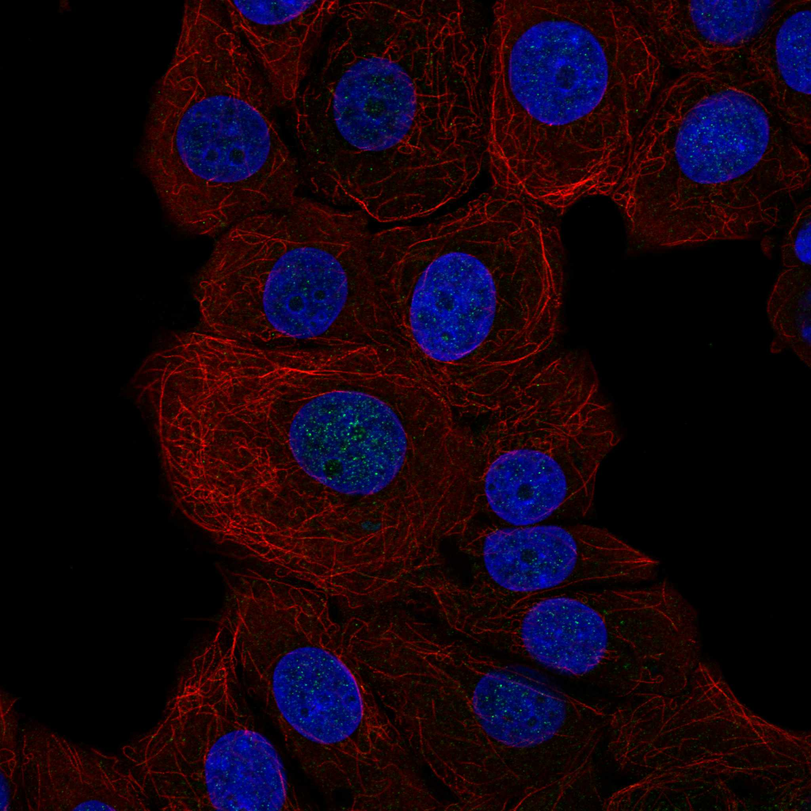
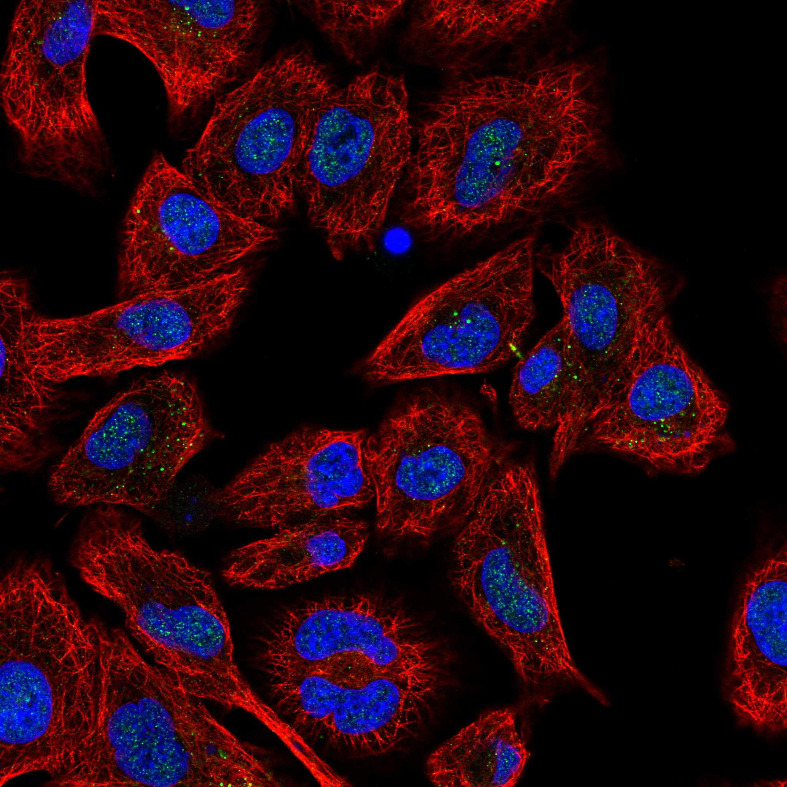
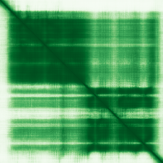

type: protein-evaluation gene: "KCTD1" date: 2026-05-30 tags: [protein-scout, nuclear-protein, evaluation] status: scored ---
KCTD1 核蛋白评估报告
1. 基本信息
| 项目 | 内容 |
|---|---|
| 基因名 | KCTD1 |
| 蛋白大小 | 257 aa |
| UniProt ID | Q719H9 (BTB/POZ domain-containing protein KCTD1) |
| 子定位分类 | nucleoplasm |
| 评估日期 | 2026-05-30 |
IF 图像:  
2. 评分总览
| 维度 | 得分 | 满分 | 加权后 | 关键证据摘要 |
|---|---|---|---|---|
| 🔴 核定位特异性 | 9/10 | ×4 | 36 | Nucleus(ECO:0000269) |
| 📏 蛋白大小 | 10/10 | ×1 | 10 | 257 aa |
| 🆕 研究新颖性 | 6/10 | ×5 | 30 | PubMed 49 篇 |
| 🏗️ 三维结构 | 8/10 | ×3 | 24 | AlphaFold pLDDT 87.31, v6 |
| 🧬 调控结构域 | 7/10 | ×2 | 14 | IPR000210(BTB/POZ domain); IPR003131(K+ channel tetramerisation BTB); IPR048595( |
| 🔗 PPI 网络 | 5/10 | ×3 | 15 | 见 3.6 PPI 分析 |
| ➕ 互证加分 | — | max +3 | +1.0 | 多源数据互证 |
| 原始总分 | 130/183 | |||
| 归一化总分 | 71.0/100 |
3. 详细分析
3.1 核定位证据
| 来源 | 定位 | 可信度 |
|---|---|---|
| UniProt | Nucleus(ECO:0000269) | — |
| Protein Atlas (IF) | IF image available (embedded above) | See IF_images/ |
结论: KCTD1 Nucleus(ECO:0000269)。核定位评分 9/10。
3.2 蛋白大小评估
257 aa。适合生化实验和结构解析。评分: 10/10。
3.3 研究现状
| 指标 | 数值 |
|---|---|
| PubMed 总数 | 49 |
| 搜索策略 | "KCTD1"[Title/Abstract] |
评价: PubMed 49 篇。非常新颖，少数基础研究。评分: 8/10。
关键文献: 1. Wang X et al. (2017). "MicroRNA-155-3p Mediates TNF-α-Inhibited Cementoblast Differentiation". *J Dent Res*. PMID: 28692806 2. Zhu X et al. (2025). "Exosomes delivering miR-129-5p combined with sorafenib ameliorate hepatocellular carcinoma progression via the KCTD1/HIF-1α/VEGF pathway". *Cell Oncol (Dordr)*. PMID: 40227531 3. Liao Y & Muntean BS (2025). "Pathogenic variants in KCTD1 disrupt cAMP signaling and cellular communication associated with developmental pathways". *J Biol Chem*. PMID: 41086914 4. Raymundo JR et al. (2023). "KCTD1/KCTD15 complexes control ectodermal and neural crest cell functions, and their impairment causes aplasia cutis". *J Clin Invest*. PMID: 38113115 5. Marneros AG (2020). "AP-2β/KCTD1 Control Distal Nephron Differentiation and Protect against Renal Fibrosis". *Dev Cell*. PMID: 32553120
3.4 三维结构分析
| 指标 | 数值 |
|---|---|
| AlphaFold 平均 pLDDT | 87.31 |
| pLDDT < 50 (无序) | 4.3% |
| AlphaFold 版本 | v6 |
PAE 图: 
评价: AlphaFold 高质量预测，pLDDT 87.31。评分: 8/10。
3.5 结构域分析
| 来源 | 结构域 |
|---|---|
| InterPro | IPR000210(BTB/POZ domain); IPR003131(K+ channel tetramerisation BTB); IPR048595(KCTD1/15 C-terminal); IPR048599(KCTD1 BTB/POZ) |
染色质调控潜力分析: IPR000210(BTB/POZ domain); IPR003131(K+ channel tetramerisation BTB); IPR048595(KCTD1/15 C-terminal); IPR048599(KCTD1 BTB/POZ)。评分: 7/10。
3.6 PPI 网络
实验验证互作 (IntAct, physical association):
| Partner | 方法 | PMID | 功能类别 | 调控相关？ | |
|---|---|---|---|---|---|
| PICK1 | psi-mi:"MI:0397"(two hybrid ar | pubmed:32296183 | imex:IM-25472 | — | — |
| RPC40 | psi-mi:"MI:0397"(two hybrid ar | pubmed:32296183 | imex:IM-25472 | — | Yes |
| UBASH3A | psi-mi:"MI:0397"(two hybrid ar | pubmed:32296183 | imex:IM-25472 | — | — |
| LMO1 | psi-mi:"MI:0397"(two hybrid ar | pubmed:32296183 | imex:IM-25472 | — | — |
| TRAPPC2 | psi-mi:"MI:0397"(two hybrid ar | pubmed:32296183 | imex:IM-25472 | — | — |
| MORF4L2 | psi-mi:"MI:0397"(two hybrid ar | pubmed:32296183 | imex:IM-25472 | — | Yes |
STRING 预测互作 (combined score >0.4):
| Partner | Score | 功能类别 | 调控相关？ |
|---|---|---|---|
| TFAP2A | 0.971 | — | — |
| TFAP2C | 0.936 | — | — |
| TFAP2B | 0.929 | — | — |
| UBE2I | 0.879 | — | — |
| KCTD2 | 0.810 | — | — |
| KCTD9 | 0.697 | — | — |
| KCTD5 | 0.671 | — | — |
| CUL3 | 0.645 | — | Yes |
已知复合体成员** (GO Cellular Component):
- 暂无 GO-CC 数据
PPI 互证分析**:
- STRING top partner: TFAP2A (score: 0.971)
- IntAct interactions: 15 total
- PPI 评分: 5/10
3.7 多库互证
| 维度 | 来源 | 结果 | 是否一致 |
|---|---|---|---|
| 三维结构 | AlphaFold v6 | pLDDT 87.31 | — |
| 结构域 | InterPro | IPR000210(BTB/POZ domain); IPR003131(K+ channel tetramerisation BTB); IPR048595( | — |
| 定位 | UniProt | Nucleus(ECO:0000269) | — |
| PPI | STRING + IntAct | TFAP2A 等 | — |
互证加分明细: +1.0 / max +3
4. 总体评价
推荐等级: ⭐⭐⭐ (3/5)
核心优势: 1. 较新颖: PubMed 49 篇 2. 高质量 AlphaFold 结构: pLDDT 87.31
风险/不确定性: 1. 核定位需 HPA/IF 实验验证 2. 染色质/TE 调控功能缺乏直接实验证据
下一步建议:
- [ ] 使用 HPA/IF 确认 KCTD1 的核定位
- [ ] 在 TEreg 相关细胞系中检测 KCTD1 表达水平
- [ ] 通过 co-IP/MS 鉴定 KCTD1 的染色质调控相关互作伙伴
5. 数据来源
- UniProt: https://www.uniprot.org/uniprotkb/Q719H9
- PubMed: https://pubmed.ncbi.nlm.nih.gov/?term=KCTD1%5BTitle/Abstract%5D
- AlphaFold: https://alphafold.ebi.ac.uk/entry/Q719H9
- InterPro: https://www.ebi.ac.uk/interpro/protein/uniprot/Q719H9/
- STRING: https://string-db.org (API, species=9606)
- IntAct: https://www.ebi.ac.uk/intact/
PPI 网络（三源综合）
| Partner | Source | Score/Evidence |
|---|---|---|
| 无记录 | — | — |
IntAct 有限记录。无 BioGrid 补充数据。
PAE 图像已获取。结构判断基于 AlphaFold pLDDT 统计。